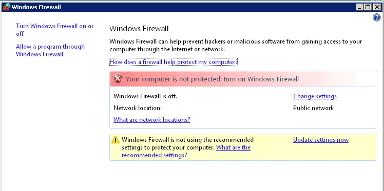
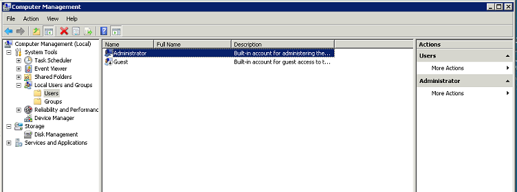
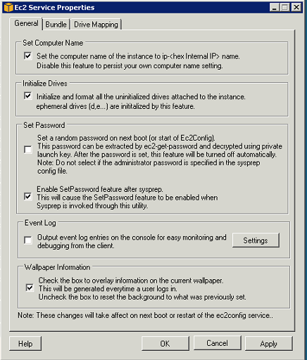
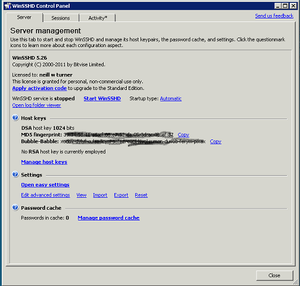

Create a Windows Server with SFTP/SSH support
Core Concepts
SFTP
SSH File Transfer Protocol (also Secret File Transfer Protocol, Secure FTP, or SFTP) is a network protocol that provides file access, file transfer, and file management functionalities over any reliable data stream. It is provided as standard on Linux servers but is not supported as part of the standard Windows Server Operating System. Don't confused SFTP servers with Microsoft supplied FTPS, also know as SSL FTP. This is not compatabile with SFTP/SSH. To support chef solo and one click testing of chef cookbooks we need a SFTP servers to copy the cookbooks from our client to the servers so they can run.SSH
Secure Shell (SSH) is a network protocol for secure data communication, remote shell services or command execution and other secure network services between two networked computers. It is provided as standard on Linux servers but is not supported as part of the standard Windows Server Operating System. To support chef solo and one click testing of chef cookbooks we need a to be able to run windows cmd commands remotely via SSH.Start and Configure a Windows 2008 Server
1. Create a security group with port 22 and 3389 open.2. Start the latest Amazon Windows 2008 Server using the security group. At time of writing ami-eb3b019f amazon/Windows_Server-2003-R2_SP2-English-64Bit-Base-2012.05.10
3. Logon as Adminstrator via RDP
4. Turn off the firewall. (Control Panel -> Firewall)

5. Change the Administrator Password. (administrative tools -> computer Management). Click on Local Users and Groups. Click on Users. Right Click on Administrator and select Set Password.

6. set the computer name:
Go to C:\Program Files\Amazon\EC2ConfigService and double-click the Ec2ConfigServiceSettings application.
Your Windows instance displays the Ec2 Service Properties dialog box.
in the general tab make sure set the compute name of the instance to ip....

7. stop the server and start the serverto get the ec2 configure changed.
See Using EC2Config Service
Install WinSSHD Server
To work with chef we need an SFTP Server that works on Windows 2008 and support SFT and SSH shell. There are alot of old SFTP servers for windows out here but the only free one I was able to make work in Windows 2008 as support SFTP file transfer and SSH remote commands and was WinSSHD.
6. download the the WinSSHD 5 installer from a href="http://www.bitvise.com/winsshd-download">http://www.bitvise.com/winsshd-download
7. Run the installer taking the defaults and install the free version.
8. Go into the winSSHD management console and start the winSSHD server.

9. Test you can access the SFTP server using say WinSCP.
10. Create a amazon machine image
Documentation on WinSSHD is available at http://www.bitvise.com/winsshd-doc-printable
NOTE: if you get error HostKeyMismatch trying to access the windows server via WinSCP on your PC go to C:\Users\
NOTE: THis setup uses password access to SFTP and SSH. It is also possible instead to setup public key. See the WinSSHD docs for details.